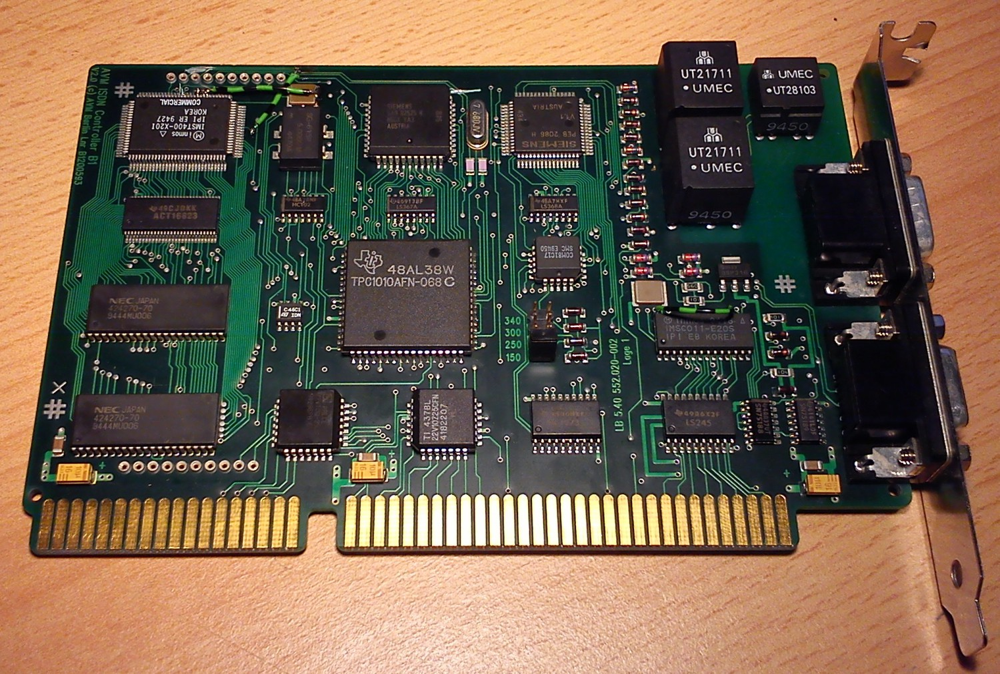
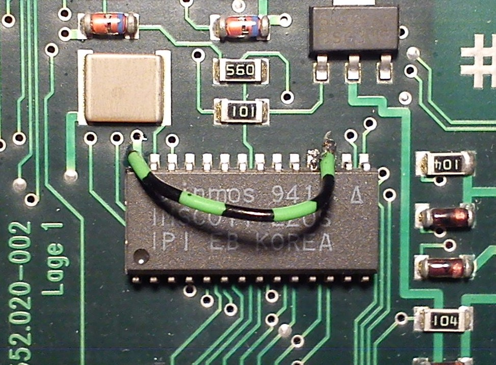
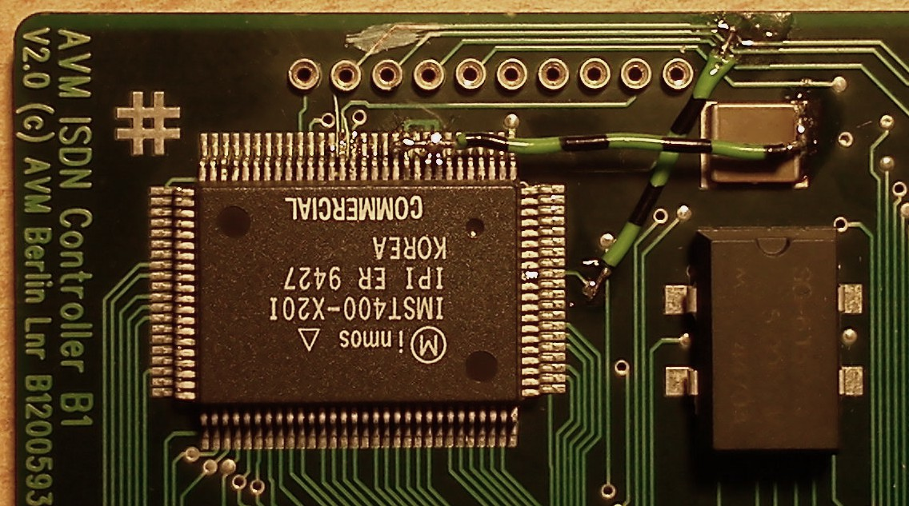
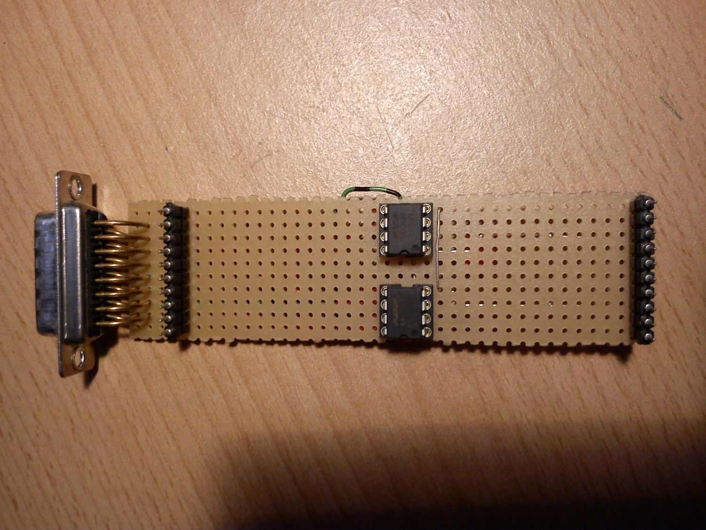
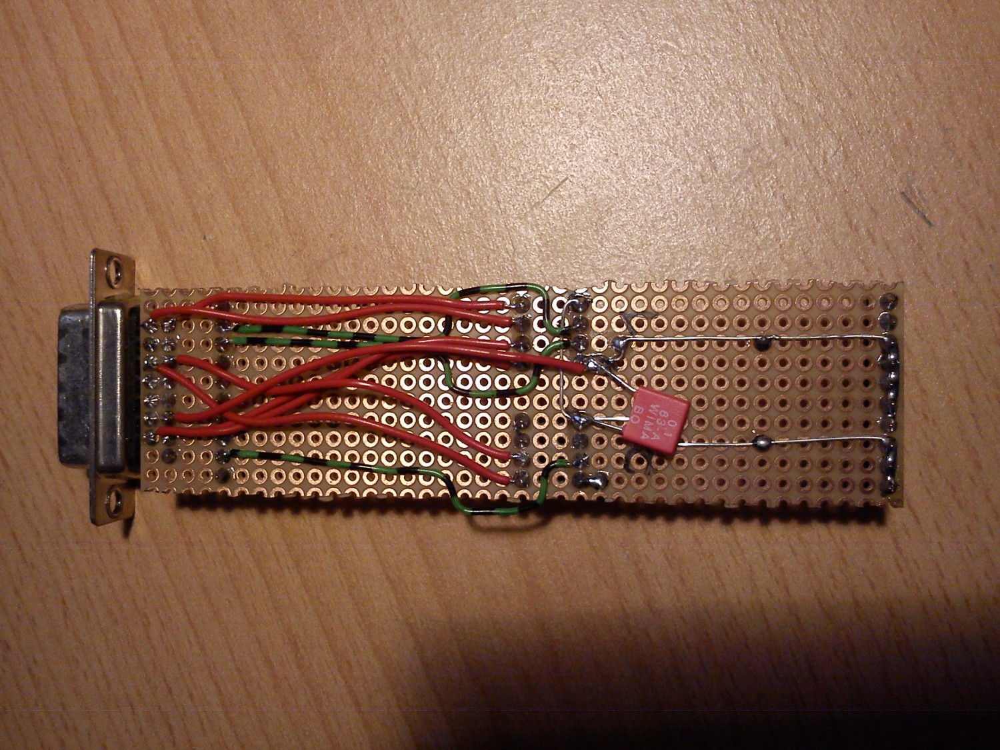

AVM B1 #
Der AVM B1 ist ein aktiver ISDN-Controller und bis Version 2.0 für den ISA-Bus gebaut. Bis Version 3.0 wird ein Transputer vom Typ T400 verwendet.

Auf der linken Seite der Karte findet sich ein kleines Transputer-System mit 1MB RAM sowie einem TRAM-ähnlichen Erweiterungsinterface. Rechts unten auf der Karte sitzt der C011, der auf den 4 jumperbaren Adressen vom ISA-Bus aus angesprochen werden kann. Der C011 ist auf der B1 fest auf Link 0 des T400 verdrahtet. Die Links sind von AVM auf der Platine auf 10MBit/s verdrahtet.
An diesem B1 habe ich nun einige Modifikationen vorgenommen:
Zuerst wurde die Linkgeschwindigkeit des C011 auf 20MBit hochgesetzt:

Dazu wird Pin 17 mittels eines spitzen Werkzeugs,
ich habe hier eine feine Messspitze verwendet, hochgebogen
und auf +5V verdrahtet, z.B. Pin 28 des C011.
Nun muss natürlich auch die Linkgeschwindigkeit des T400 angepasst werden:

Das ist leider ein bisschen kniffliger, da der T400 einen noch geringeren Pinabstand besitzt als der C011. Es müssen die Pins 8, 9 und 11 hochgebogen und auf +5V gelegt werden, z.B. an dem 1µF-Kondensator, der direkt neben dem T400 aufgelötet ist und zur Pufferung der internen Versorgungsspannung des Link-Interfaces vom T400 dient.
Weiterhin ist es, wie sich später zeigen wird, praktisch, den RESET-Pin auch am Erweiterungsbus anliegen zu haben. Der Pin 2 ist für die Funktion des B1 nicht weiter von Belang und kann daher an der markierten Stelle durchtrennt werden und mit einem Draht an Pin 92 des T400, resp. einer nahen Durchkontaktierung, angelötet werden.
Die Pinbelegung, soweit ausgemessen, des Erweiterungsbusses ist dann wie folgt:
| Pin | Bedeutung | Pin | Bedeutung |
|---|---|---|---|
| 1 | ? | 11 | ? (PAL) |
| 2 | RESET | 12 | ? (PAL) |
| 3 | ? (82525) | 13 | GND |
| 4 | ? (82525) | 14 | GND |
| 5 | ? (82525) | 15 | GND |
| 6 | ? | 16 | GND |
| 7 | ? | 17 | GND |
| 8 | Link1Out | 18 | +5V |
| 9 | Link1In | 19 | +5V |
| 10 | ? | 20 | +5V |
Spätestens jetzt sollte mit ispy überprüft werden, ob die Karte noch korrekt arbeitet und falls nicht, mit der Fehlersuche begonnen werden.
Es mag sich nun der eine oder andere fragen, wozu all diese Modifikationen durchgeführt werden sollen.
Da der B1 sich auf Adr. 0x150 ansprechen lässt und sich darauf wie eine Inmos B004 Transputer-Entwicklungskarte verhält,
bietet der B1 daher eine sehr günstige und direkte Transputer-Einstiegskarte.
Wenn nun Link 1, der auf den Erweiterungsbus gelegt ist (s.o.),
nach “draußen” führt, kann man dort weitere Transputer(netze) anschließen,
z.B. den AVM T1(-B, wenn vorhanden).
Dazu braucht es jedoch einen RS-422-Konverter, der auf den B1 aufgesteckt wird:


Bei Maxim bekommt als kostenlose Samples zwei MAX3467. Es handelt sich dabei um RS-422-Konverter für bis zu 40MBit/s, also mehr als ausreichend für die Transputer-Links. Diese werden nun anhand der nachfolgenden Schaltskizze verdrahtet, am besten auf einer Lochraster-Platine. Der 15-pol. D-SUB-Stecker ist dabei kein Muss, aber da ich für die Verbidung zum T1 das originale Kabel verwende, habe ich hier einen verwendet. Das Pinout des Kabels findet sich, ebenso wie weitere Informationen zum T1, auf der entsprechenden Unterseite.